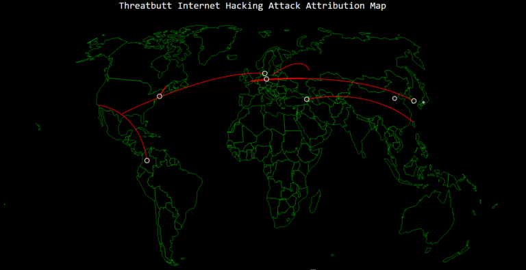

Por que se preocupar com segurança?
O que é Cyber Security? É uma pergunta carregada, mas vamos fazer o nosso melhor para simplificar o que é e, francamente, por que você deve se importar. Neste momento, estamos ouvindo a terminologia jogada em torno das notícias. O FBI (de acordo com a Cybercast News) prevê ataques cibernéticos no setor privado do país - repita-se - o setor PRIVADO e as redes governamentais devem "crescer exponencialmente". Isso significa que o crime cibernético continuará a representar uma séria ameaça não apenas para sua privacidade e segurança pessoal, mas também para a economia dos EUA.
Em vez de assustá-lo, queremos ajudá-lo a entender a importância de se proteger. Há muitas maneiras de fazer isso, e como este é um blog de empresas, naturalmente, vamos promover o nosso produto para você. Primeiro, porque pensamos que é uma solução viável para os consumidores que se preocupam com sua privacidade pessoal na Internet, e também é acessível. Mas primeiro as coisas primeiro, queremos educá-lo sobre a importância de criar um túnel privado virtual. Então você pode decidir se vale a pena proteger seus recursos. Por isso, queremos dizer de tudo para o seu computador doméstico e as informações confidenciais que você armazena, como fotos de seus filhos e senhas para suas contas bancárias, registros médicos (a lista continua). Depois, existem os seus dispositivos. Muitos de nós navegam na Internet em uma conexão Wi-Fi sem garantia, sem sequer saber disso. Seu telefone deixa você vulnerável a ataques cibernéticos também. Para ser franco, muitos desses criminosos são cada vez mais sofisticados e, infelizmente, as pessoas não estão sendo pró-ativas sobre a proteção de sua "propriedade" online. Muitas vezes, é preciso se tornar uma vítima para perceber a importância de manter você e sua família seguros conectados.
Em suma, a segurança cibernética é sobre proteger sua rede, computadores, programas e dados de um ataque. É por isso que você deveria se importar. A limpeza após um criminoso cibernético pode ser dispendiosa. Vimos isso acontecer aos vendedores ambulantes, hospitais, indústria do entretenimento e até mesmo agências governamentais. Então, o que vai levar para que você preste atenção a esse crime de nova era? Quando é tarde demais? Nós esperamos que não.
Alem disso nesse exato momento dexenas de ataques hackers estão acontecendo, e possivel ver esse ataques por meio do THREATBUTT que mostra ataques cibernéticos globais em tempo real. Os visitantes podem ver o ataque e os endereços IP alvo. O site exibe o tipo de malware usado, incluindo o malware desconhecido.
Guia de como não ser hackeado
1. Você é um alvo para hackers
Nunca diga "Isso não vai acontecer comigo". Estamos todos em risco e as apostas são altas - para seu bem-estar pessoal e financeiro, e para a reputação e a reputação da Universidade.
Manter os recursos de computação do campus seguros é responsabilidade de todos. Seguindo as dicas abaixo e permanecendo vigilante, você está fazendo sua parte para se proteger e outros.
2. Mantenha o software atualizado
Instalar atualizações de software para seu sistema operacional e programas é fundamental. Instale sempre as atualizações de segurança mais recentes para seus dispositivos:
Ative Atualizações Automáticas para o seu sistema operacional. Use navegadores da Web, como o Chrome ou o Firefox, que recebem atualizações de segurança freqüentes e automáticas. Certifique-se de manter atualizados os plug-ins do navegador (Flash, Java, etc.) atualizados. Utilize o Secunia PSI (gratuito) para encontrar outro software no seu computador que precisa ser atualizado.
3. Evite fraudes de Phishing - cuidado com os e-mails e telefonemas suspeitos
Os golpes de phishing são uma ameaça constante - usando vários engenhos de engenharia social (link é externo), os criminosos cibernéticos tentarão enganá-lo em divulgar informações pessoais, como sua ID de login e senha, informações bancárias ou de cartão de crédito.
Os golpes de phishing podem ser realizados por telefone, texto ou através de sites de redes sociais - mas geralmente por e-mail. Desconfie de qualquer mensagem de e-mail ou chamada telefônica oficial que solicite informações pessoais ou financeiras. Confira nossa seção de Recursos de Phishing para obter detalhes sobre como identificar fraudes de phishing e se proteger.
4. Pratique um bom gerenciamento de senhas
Todos nós temos muitas senhas para gerenciar - e é fácil pegar atalhos, como reutilizar a mesma senha. Um programa de gerenciamento de senha (o link é externo) pode ajudá-lo a manter senhas únicas fortes para todas as suas contas. Esses programas podem gerar senhas fortes para você, inserir credenciais automaticamente e lembrá-lo de atualizar suas senhas periodicamente.
Existem vários serviços de gerenciamento de senhas online que oferecem versões gratuitas e o KeePass (link é externo) é um aplicativo gratuito para Mac e Windows.
Aqui estão algumas dicas de senha geral para se lembrar:
Use senhas longas - é recomendado 20 caracteres ou mais. Use uma forte mistura de caracteres e nunca use a mesma senha para vários sites. Não compartilhe suas senhas e não as anote (especialmente não em uma nota post-it anexada ao seu monitor). Atualize suas senhas periodicamente, pelo menos uma vez a cada 6 meses (90 dias é melhor). O artigo de proteção de suas credenciais contém recomendações detalhadas para manter sua senha segura.
5. Tenha cuidado com o que você clica
Evite visitar sites desconhecidos ou baixar software de fontes não confiáveis. Esses sites geralmente hospedam malware que automaticamente, e muitas vezes silenciosamente, comprometem seu computador.
Se anexos ou links no e-mail forem inesperados ou suspeitos por qualquer motivo, não clique nele.
O ISP recomenda usar o Click-to-Play ou o NoScript (o link é externo), recursos adicionais do navegador que impedem o download automático do conteúdo do plug-in (por exemplo, Java, Flash) e scripts que podem conter códigos mal-intencionados.
6. Nunca deixe dispositivos sem vigilância
A segurança física de seus dispositivos é tão importante quanto sua segurança técnica.
Se você precisa deixar seu laptop, telefone ou tablet por qualquer período de tempo - trancá-lo para que ninguém mais possa usá-lo. Se você mantiver informações confidenciais em uma unidade flash ou disco rígido externo, certifique-se de manter estas bloqueadas também. Para computadores de mesa, desligue o sistema quando não estiver em uso - ou bloqueie sua tela.
7. Proteger dados confidenciais
Esteja ciente de dados sensíveis com os quais você entra em contato e restrições associadas - reveja o Padrão de classificação de dados da UCB para entender os requisitos de nível de proteção de dados. Em geral:
Mantenha dados confidenciais (por exemplo, SSN, informações de cartão de crédito, registros de estudantes, informações de saúde, etc.) fora de sua estação de trabalho, laptop ou dispositivos móveis. Remova arquivos de dados sensíveis de seu sistema com segurança, quando eles não são mais necessários. Use sempre criptografia ao armazenar ou transmitir dados confidenciais. Não sabe como armazenar ou manipular dados confidenciais? Contacte-nos e pergunte!
8. Use dispositivos móveis com segurança
Considerando o quanto confiamos nos nossos dispositivos móveis, e quão susceptíveis eles devem atacar, você vai querer certificar-se de que você está protegido:
Bloqueie seu dispositivo com um PIN ou senha - e nunca o deixe desprotegido em público. Apenas instale aplicativos de fontes confiáveis. Mantenha atualizado o sistema operacional do seu dispositivo. Não clique em links ou anexos de e-mails ou textos não solicitados. Evite transmitir ou armazenar informações pessoais no dispositivo. A maioria dos dispositivos portáteis são capazes de empregar criptografia de dados - consulte a documentação do seu dispositivo para obter as opções disponíveis. Use as ferramentas do Find my iPhone (link for externo) da Apple ou o Android Device Manager (link é externo) para ajudar a evitar a perda ou o roubo. Faça backup de seus dados.
9. Instalar proteção anti-vírus
Apenas instale um programa anti-vírus de uma fonte conhecida e confiável. Mantenha as definições de vírus, motores e software atualizados para garantir que seu programa anti-vírus permaneça efetivo.
Para sistemas de propriedade pessoal e computadores não gerenciados de UCB, o campus oferece software anti-vírus gratuito, disponível para Windows e Mac, para professores, funcionários e alunos atuais.
10. Faça backup de seus dados
Faça uma cópia de segurança regularmente - se você for vítima de um incidente de segurança, a única maneira garantida de reparar o computador é apagar e reinstalar o sistema.
A sua principal defesa contra os hackers
É extremamente tentador simplesmente reutilizar a mesma senha para vários serviços on-line, deixando todos abertos ao ataque se apenas um estiver comprometido. Por outro lado, usar um login exclusivo a cada vez significa que você corre o risco de ser bloqueado se você inseri-lo incorretamente muitas vezes. É por isso que você precisa de um gerente de senha e gerador robusto.
Esses programas combinam letras (maiúsculas e minúsculas), números e caracteres especiais para criar senhas únicas e seguras resistentes a ataques de dicionário.
Essas senhas são então criptografadas e armazenadas em um cofre protegido por um login mestre, que é a única senha que você precisa lembrar. Depois de iniciar sessão, os melhores gestores e geradores de senhas preencherão seu nome de usuário e senha automaticamente cada vez que visitar um site que os exija.
1. LastPass

2. Dashlane

3. RoboForm

4. KeePass Password Safe

5. Sticky Password

Como manter sua privacidade
1. Não preencha seu perfil de mídia social.
Quanto mais informações você compartilhar on-line, mais fácil será para alguém conseguir as mãos sobre isso. Não coopere.
Dê uma olhada em seus perfis de redes sociais e mantenha-os estéril - as pessoas que precisam saber sua data de nascimento, endereço de e-mail e número de telefone já os possuem. E qual é exatamente o ponto de compartilhar tudo sobre você no seu perfil do Facebook? Se você se preocupa com sua privacidade, não o fará.
2. Seja seletivo sobre o compartilhamento do seu número de segurança social - mesmo os últimos 4 dígitos.
Pense duas vezes antes de compartilhar seu número de segurança social com qualquer pessoa, a menos que seja seu banco, uma agência de crédito, uma empresa que queira fazer uma verificação de antecedentes sobre você ou alguma outra entidade que tenha que se reportar ao IRS. Se alguém conseguir as mãos sobre ele e tem informações tais como data de nascimento e endereço eles podem roubar sua identidade e retirar cartões de crédito e acumulam outras dívidas em seu nome.
Mesmo os últimos quatro dígitos do seu número de segurança social só devem ser usados quando necessário. Os últimos quatro são frequentemente utilizados pelos bancos e outras instituições para redefinir sua senha para acessar sua conta.
Além disso, se alguém tiver os últimos quatro dígitos e seu lugar de nascimento, é muito mais fácil adivinhar o número inteiro. Isso porque os três primeiros são determinados por onde você ou seus pais solicitaram seu SSN. E o segundo conjunto de dois são o número do grupo, que é atribuído a todos os números distribuídos em determinado momento em sua área geográfica. Então, um determinado ladrão de identidade com algum poder de computação poderia pirateá-lo com o tempo.
3. Bloqueie seu hardware.
Configure o seu PC para exigir uma senha quando ele acorda do modo de suspensão ou inicializa-se. Claro, você pode confiar nas pessoas que vivem em sua casa, mas e se o seu laptop for roubado ou você o perder?
A mesma coisa com seus dispositivos móveis. Não só você deve usar uma senha para acessá-las toda vez que você as usa, instale um aplicativo que localize seu telefone ou tablet se ele for perdido ou roubado, bem como bloqueá-lo ou limpe-o de qualquer dado, de modo que um estranho não pode tenha acesso ao tesouro dos dados salvos.
E, certifique-se de que seus computadores e dispositivos móveis sejam carregados com aplicativos e softwares anti-malware. Eles podem impedir que criminosos roubem seus dados. Recomendamos o Norton Internet Security (US $ 49,99 no norton.com ou US $ 17,99 no Amazon) em nosso guia de compra de segurança do computador ou intensificar o Norton 360 Multi-Device (US $ 59,99 no norton.com ou US $ 49,99 no Amazon) se você tiver dispositivos móveis. E você quer duplicar sua proteção em dispositivos Android instalando, já que descobrimos que as aplicações anti-malware são lúgubres na detecção de spyware.
4. Ativar a navegação privada.
Se você não quiser que alguém com acesso físico ao seu computador veja onde você está saindo online, você deve habilitar a "navegação privada", uma configuração disponível em cada navegador principal. Ele exclui cookies, arquivos temporários da Internet e histórico de navegação depois de fechar a janela.
Toda empresa que anuncia on-line está interessada em saber quais sites você visita, o que você compra, quem você é amigo das redes sociais, o que você gosta e muito mais. Ao reunir informações sobre suas atividades on-line, eles podem servir anúncios segmentados que são mais propensos a atraí-lo para comprar algo.
Por exemplo, os botões Facebook, Twitter e Google+ que você vê em praticamente todos os sites permitem que essas redes o acompanhem, mesmo que você não tenha uma conta ou esteja logado nelas. Outras vezes, as empresas de coleta de informações dependem do código incorporado em banners que rastreiam suas visitas, preferências e informações demográficas.
Se você realmente se preocupa com sua privacidade, você vai navegar na Internet anonimamente, escondendo seu endereço IP. Você pode fazer isso usando um proxy web, uma rede privada virtual (VPN) ou Tor, uma rede aberta gratuita que funciona roteando seu tráfego através de uma série de servidores, operados por voluntários em todo o mundo, antes de enviá-lo para o seu destino.
5. Use um cofre de senha que gera e lembra senhas fortes e exclusivas.
A maioria das pessoas sabe melhor do que usar a mesma senha para mais de um site ou aplicativo. Na realidade, pode ser impossível lembrar um diferente para as dezenas de serviços on-line que você usa. O problema com o uso da mesma senha em mais de um lugar é se alguém receber as mãos na sua senha - digamos, através de um ataque de phishing - eles podem acessar todas as suas contas e causar todos os tipos de problemas.
Para eliminar este dilema, use um gerenciador de senhas que não se esqueçam apenas de todas as suas senhas, mas gerarão super fortes e únicas e as preencherão automaticamente em campos de login com o clique de um botão.
LastPass é uma escolha excelente e gratuita.
6. Use a autenticação de dois fatores.
Você pode bloquear seu Facebook, Google, Dropbox, Apple ID, Microsoft, Twitter e outras contas com autenticação de dois fatores. Isso significa que, quando você fizer o login, você também precisará inserir um código especial que os textos do site para o seu telefone. Alguns serviços requerem cada vez que você efetuar o login, outro apenas quando estiver usando um novo dispositivo ou navegador. A Electronic Frontier Foundation tem uma excelente visão geral do que está disponível.
A autenticação de dois fatores funciona lindamente para impedir que outros acessem suas contas, embora algumas pessoas sintam que é muito demorado. Mas se você é sério sobre privacidade, você suportará o atrito.
7. Configure um alerta do Google para o seu nome.
Esta é uma maneira simples de manter um olho em algo que alguém possa dizer sobre você na web. É apenas uma questão de dizer ao Google o que procurar (neste caso, seu nome), bem como quais tipos de páginas da Web para pesquisar, com que frequência pesquisar e qual o endereço de e-mail que o gigante do mecanismo de busca deve usar para enviar notificações. Configure um alerta do Google aqui.
8. Pague por dinheiro com dinheiro.
De acordo com o Business Insider, as empresas de cartões de crédito estão vendendo seus dados de compra para anunciantes. Não quer que as empresas saibam quanta bebida você está comprando ou outros hábitos potencialmente embaraçosos? Compre coisas do antigo caminho - com moedas e contas.
9. Mantenha sua atividade de rede social privada.
Verifique as configurações do seu Facebook e certifique-se de que apenas os amigos podem ver o que você está fazendo. Vá para as configurações dentadas no canto superior direito da tela e clique em Configurações de Privacidade >> Quem pode ver minhas coisas.
No Twitter, clique nas configurações cog, depois Configurações. A partir daí, você pode ajustar todos os tipos de configurações de privacidade, como uma caixa que dá permissão ao Twitter para adicionar sua localização aos tweets, bem como a capacidade de tornar seus tweets privados, o que significa que apenas as pessoas que você aprova podem vê-los. Você também pode parar a plataforma de microblogs de adaptar sua experiência do Twitter com base em outros sites que você visita.
Se você usar o Google+, vá para Home >> Configurações. Lá você pode ajustar coisas como quem pode interagir com você, comentar suas postagens ou iniciar uma conversa com você.
10. Não dê o nosso código postal ao efetuar compras com cartão de crédito.
Muitas vezes, as lojas vão pedir o seu código postal quando estiver a verificar com um cartão de crédito. Não dê para eles, a menos que você queira doar seus dados para o banco de dados de marketing, adverte Forbes. Ao combinar o seu nome, retirado do seu cartão de crédito, com seu código postal, as empresas podem mais facilmente extrair mais informações, incluindo seu endereço, número de telefone e e-mail. endereço.
Os melhores anti-virus
O software Antivírus é uma das primeiras coisas que você deve instalar em um novo PC, e a proteção de alta qualidade pode ser sua completamente gratuita. Atualizamos o nosso melhor software de segurança gratuito para que você saiba que está obtendo a melhor proteção para seus dados e suas informações pessoais.
É justo sugerir que a solução antivírus incorporada do Windows 10, o Windows Defender, é o último aplicativo de AV gratuito que você deve confiar para manter seu sistema limpo. Não que seja abertamente ruim - apesar de cair atrás de quase todas as soluções antivírus de terceiros -, mas porque tem um grande alvo pintado para atacantes.
Os usuários do Windows que não instalaram algo mais difícil são os hospedeiros perfeitos para vírus; ataque os links fracos, ataque através das fendas em uma peça de armadura de software esses links fracos têm por padrão e você está dentro.
1. Bitdefender Antivirus Free Edition

2. Avira Free Antivirus

3. Sophos Home

4. Kaspersky Free

5. Avast Free Antivirus

6. AVG AntiVirus Free

7. Panda Free Antivirus

8. 360 Total Security

9. ZoneAlarm Free Antivirus

10. Adaware Antivirus Free

Os melhores firewalls
Na década de 1990, a Microsoft teve um problema: o Windows pareceu sofrer de problemas de segurança infinitos que os hackers e outros bandidos online foram rápidos de explorar. Uma maneira de lutar foi instalar um firewall - um aplicativo que bloqueou o tráfego de rede malicioso e / ou indesejável e que poderia garantir que o software desonesto não pudesse se esgueirar para o seu PC.
A Microsoft começou a construir o seu próprio firewall no Windows e isso ainda é o caso hoje, mas os ataques ainda acontecem e um software adicional pode tornar seu sistema ainda mais seguro. Estes são os aplicativos de firewall que achamos que você deveria considerar usar independentemente da versão do Windows que você está executando.
Alguns provedores de antivírus agrupam um firewall com seu software antivírus gratuito, enquanto outros apenas incluem um com seus suítes de segurança premium. Aqui, estamos olhando para firewalls que podem ser usados ao lado de seu software de antivírus normal.
1. ZoneAlarm Free Firewall

2. Comodo Free Firewall

3. GlassWire

4. TinyWall

5. OpenDNS Home

Os melhores anti-malware
O malware é qualquer tipo de software malicioso - não apenas vírus, worms e keyloggers, mas também programas de incômodo como adware que adicionam barras de ferramentas ao seu navegador, bombardeiam você com janelas pop-up, seqüelam sua página inicial e enviam seus dados pessoais para anunciantes. Estes não são apenas irritantes, mas também apresentam um sério risco de segurança.
Uma boa suíte antivírus é uma excelente primeira linha de defesa para o seu PC, mas muitas vezes é uma boa idéia instalar software anti-malware adicional para aumentar sua proteção contra uma gama mais ampla de ameaças. Alternativamente, você pode substituir seu software de segurança existente por uma nova suite projetada para proteger contra todos os tipos de malware - veja nosso melhor software antivírus gratuito.
Aqui, arrumamos o melhor software anti-malware gratuito para o Windows, quer você esteja procurando por um novo pacote de segurança, ou apenas um programa adicional para dar um impulso ao seu antivírus regular.
1. BitDefender Antivirus Free Edition

2. AVG AntiVirus Free

3. MalwareBytes Anti-Malware

4. SpyBot Search & Destroy

5. Emsisoft Emergency Kit